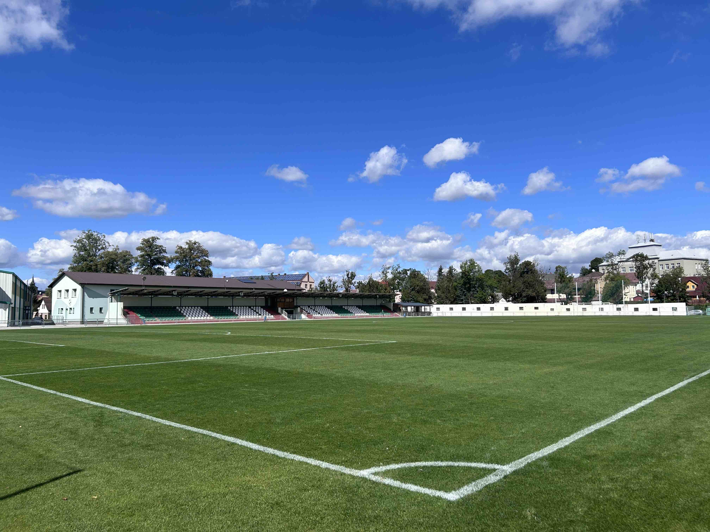

FC Hlinsko
Est. 1905
Co je nového
Všechny novinkyNaše mužstva
Přehled všech týmů
První půlrok máte zdarma
Bereme holky i kluky od pěti let. Prvních šest měsíců se u nás trénuje bez členských příspěvků, takže si dítě v klidu vyzkouší, jestli ho fotbal baví. Navíc od nás dostane klubové vybavení, nepotřebujete nic než sportovní boty a chuť hýbat se.

Odchovanci, kteří to dotáhli
Za sto dvacet let prošly Olšinkami stovky hráčů. Někteří zůstali u okresního fotbalu, jiní se dostali až do ligy a do reprezentace. Všichni ale začínali na stejném hřišti, na kterém dnes trénují naše přípravky. Nejcennější zápisy v kronice jsou z roku 1980, kdy áčko vyřadilo v Českém poháru Baník Ostrava a došlo do čtvrtfinále, a ze sezony 1984/85 strávené ve druhé národní lize.
Narozeniny slaví
Hráčům, trenérům i všem, kdo drží hlinecký fotbal v chodu, přejeme hodně zdraví, radosti a gólů.
Naši partneři
Děkujeme firmám a institucím, které dlouhodobě podporují hlinecký fotbal od přípravek až po áčko.
Za podpory Města Hlinska, Pardubického kraje a Národní sportovní agentury.